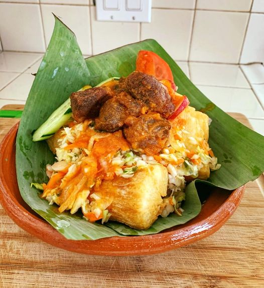

Yuca Frita

Description
We’re diving into an irresistibly delicious recipe that holds a special place in my heart and kitchen: Yuca Frita Salvadoreña, or Salvadoran Fried Yuca. This delightful dish is a staple in El Salvador, cherished for its simplicity and soul-satisfying flavors. Whether you’re a seasoned cook or a curious food enthusiast, preparing Yuca Frita at home brings a piece of Salvadoran culture to your dining table. Yuca Frita Salvadoreña is a Salvadoran-style fried cassava. Cassava, also known as yuca or manioc, is a starchy root vegetable native to South America and commonly eaten in many parts of the world. In El Salvador, yuca is a staple food prepared in various ways, including frying.
Ingredients
- 1 lb of fresh yuca (cassava root), alternatively, you can use frozen yuca which is often already peeled and saves time.
- Oil for frying traditionally, vegetable or canola oil is used for its neutral flavor.
- A pinch of salt to taste.
- Water for boiling the yuca.
For the optional Curtido (Salvadoran pickled cabbage slaw):
- 1/4 head of Cabbage, shredded
- 1 small carrot, grated
- 1/2 small onion, thinly sliced
- 1/2 cup apple cider vinegar
- 1/4 cup water
- 1/2 teaspoon salt
- 1/2 teaspoon dried oregano
- 1/4 to 1/2 teaspoon crushed red pepper flakes (optional, for heat)
For the Salsa Roja (Salvadoran red sauce):
- 1 can (8 oz) of tomato sauce
- 1 cup water
- 1/2 onion, chopped
- 1 clove garlic, minced
- 1/2 teaspoon dried oregano
- Salt and pepper to taste
- 1-2 tablespoons oil for cooking
Steps
Prepare the Yuca
- Begin by peeling the yuca, carefully removing the brown outer skin and the waxy layer underneath. If you’re using frozen yuca, this step is already done for you.
- Cut the yuca into 3-4 inch sections. Split each section in half lengthwise and remove the fibrous core.
- Rinse the yuca pieces under cold water.
- Fill a large pot with water and add a pinch of salt. Bring the water to a boil.
- Carefully place the yuca pieces into the boiling water. Reduce the heat and simmer for about 20-30 minutes, or until the yuca is fork-tender but still firm.
- Drain the yuca and let it cool down slightly. Cut into smaller, bite-sized pieces if desired.
Fry the Yuca:
- Heat oil in a heavy-bottomed frying pan over medium-high heat. You’ll want the oil to be about an inch deep, enough to cover half of the yuca pieces.
- Carefully add the yuca to the hot oil and fry until they are golden brown and crispy, usually about 4-5 minutes on each side. Work in batches to avoid overcrowding the pan.
- Once the yuca is nicely browned and crispy, remove it with a slotted spoon and place it on paper towels to drain excess oil.
- with a sprinkle of salt while still hot.
- Season with a sprinkle of salt while still hot.
Make the Curtido (optional):
- Combine the shredded Cabbage, grated carrot, and sliced onion in a bowl.
- In a separate bowl, whisk together apple cider vinegar, water, salt, oregano, and red pepper flakes.
- Pour the vinegar mixture over the cabbage mix and stir to combine.
- Let the Curtido sit at room temperature for at least an hour or, even better, refrigerate for several hours to allow the flavors to meld.
Prepare the Salsa Roja (optional):
- Heat oil in a saucepan over medium heat. Sauté the onions until translucent, then add garlic and cook for about a minute more.
- Add the tomato sauce, water, and oregano to the pan—season with salt and pepper.
- Bring to a simmer and cook for about 10-15 minutes to thicken slightly and develop the flavors.
- Taste and adjust seasoning as necessary.
What to server with
Yuca Frita Salvadoreña is a versatile dish that can stand on its own as a delicious snack or appetizer but also shines as part of a larger meal. When planning what to serve with Yuca Frita, consider balancing the dish’s hearty and crispy nature with complementary flavors and textures. Here are some suggestions for side dishes and accompaniments to elevate your Yuca Frita experience, making it an unforgettable meal.